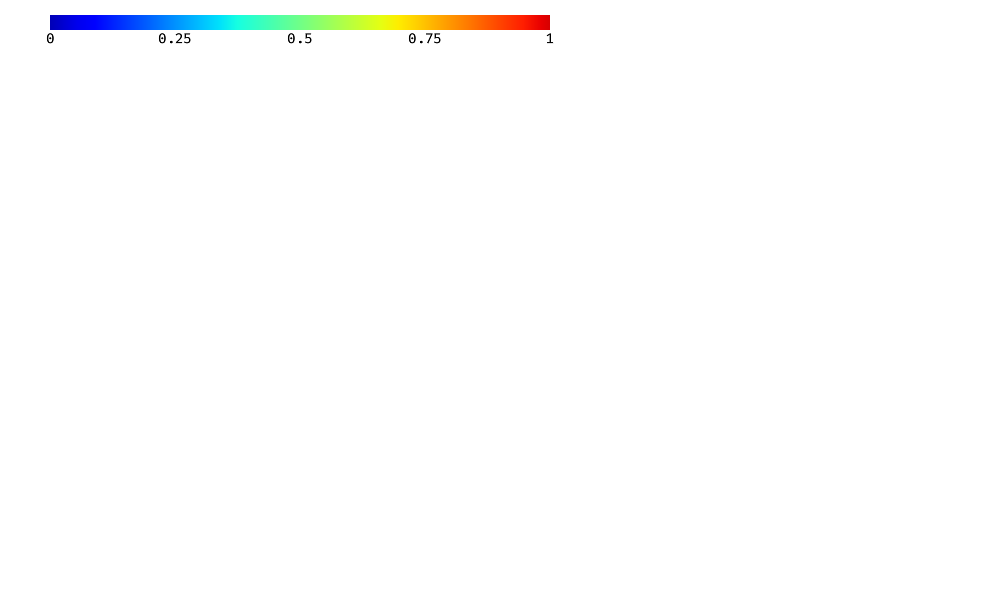
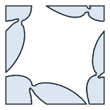
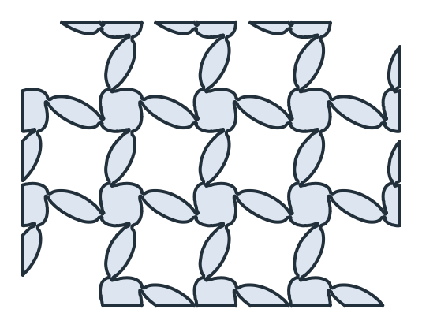
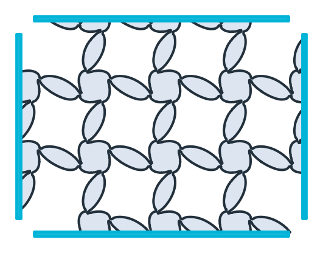
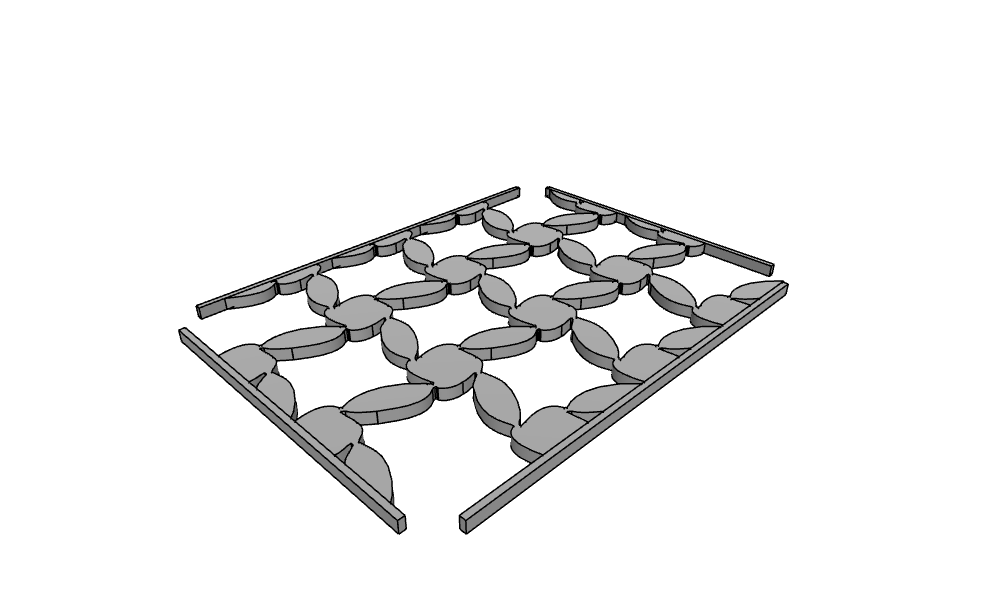
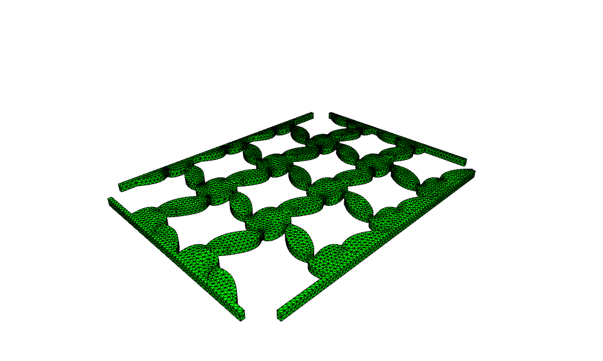
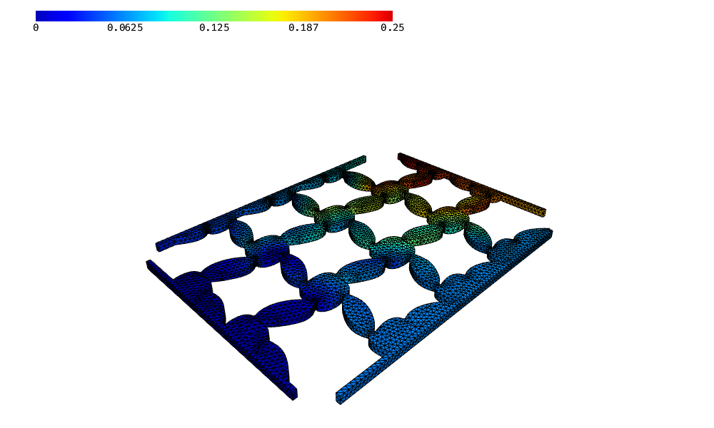

From level sets
px.FromLevelSet(gf, edge_length) turns the region where an NGSolve level set function is positive into a shape. The example is the unit cell of an auxetic metamaterial from a shape optimization. Tiled into a lattice, framed, extruded, meshed and pulled, it gets wider instead of narrower.
[1]:
import numpy as np
from ngsolve import *
from ngsolve_webgpu.jupyter import Draw
import netgen.occ as occ
import matplotlib.pyplot as plt
import planex as px
The level set
The level set is an H1 function of order 1 on a mesh of the unit square, with material where it is positive, drawn here as a height field:
[3]:
mesh = Mesh("auxetic_levelset.vol.gz")
phi = GridFunction(H1(mesh, order=1))
phi.vec.FV().NumPy()[:] = np.load("auxetic_levelset.npy")
Draw(phi, deformation=True)

One cell
The zero line is sampled every 1e-3. A P1 level set has a kink in every element, so splines are fitted generously, within 1e-2, and edges shorter than that are removed. Edges on the mesh boundary keep the mesh’s boundary name, and the others are called interface. For a periodic mesh, FromLevelSet makes the crossings on opposite sides match and carries the identification of the sides over to the shape, by their boundary names. The sides of this cell’s mesh all have the same name,
default, so the periodic identification is switched off with periodic=False. Figure 1 shows the sampled cell and the fitted one.
[4]:
cell = px.FromLevelSet(phi, edge_length=1e-3, periodic=False)
fit = dict(max_edge_length=0.1, tol=1e-2, ignore_edges_smaller=1e-3)
fitted = cell.Simplified(remove_edges_smaller=1e-2, fit_splines=fit)
print("area", cell.mass, "fitted", fitted.mass, len(cell.faces), "faces")
area 0.39697922243380124 fitted 0.3971013735559931 4 faces

(a) Sampled: 881 edges
(b) Fitted: 37 edges
The lattice
The lattice consists of three rows of four cells, each moved by exactly one cell and united. The material sits around the cell corners, so the quarter pieces at the four corners of the lattice have no neighbors. Together they form one cell, and only the connected lattice is kept. The level set is not exactly periodic, so where two cells meet, their outlines miss each other by up to 7e-5. Simplified(remove_edges_smaller=1e-3) removes these tiny steps, so the mesh of the solid below does not
have to resolve edges of that size (Figure 2).
[6]:
united = px.Unify([fitted.Translated((j, i)) for i in range(3) for j in range(4)])
lattice = max(united.faces, key=lambda f: f.mass)
print(len(united.faces), "faces, the lattice holds", lattice.mass / fitted.mass, "cells of material")
lattice = lattice.Simplified(remove_edges_smaller=1e-3)
(x0, y0), (x1, y1) = lattice.bounding_box
W, H = x1 - x0, y1 - y0
5 faces, the lattice holds 10.999999999999982 cells of material

The frame
A wall of 0.05 surrounds the lattice, cut open at the corners by square slots of 0.4 so that the four walls move independently. The frame is one sketch: the opening for the lattice, then the outer sides, named for the boundary conditions. The slots are squares centered on the corners of the lattice.
[8]:
wall = 0.05
slot = 0.4
frame = px.QuickSketch((x0, y0)).Rectangle(W, H)
frame.Move((x0 - wall, y0 - wall)).Line(W + 2 * wall, 0, name="bottom")
frame.Line(0, H + 2 * wall, name="right").Line(-W - 2 * wall, 0, name="top").Close(name="left")
slots = px.QuickSketch()
for corner in ((x0, y0), (x1, y0), (x1, y1), (x0, y1)):
slots.RectangleC(corner, slot, slot)
walls = frame.Face() - slots.Shape()
The walls are glued to the lattice as a second, much stiffer material. The faces do not overlap, so px.Glue only makes them share their edges, and each keeps its own name (where parts do overlap, the properties of the first part win). Each outer side is shorter than the frame by the two slots (Figure 3):
[9]:
lattice.name = "lattice"
walls.name = "wall"
specimen = px.Glue([lattice, walls])
print(len(specimen.faces), "faces", sorted({f.name for f in specimen.faces}))
for side, exact in (("left", H), ("right", H), ("top", W), ("bottom", W)):
print(side, sum(e.mass for e in specimen.edges(name=side)), "exact", exact - slot)
5 faces ['lattice', 'wall']
left 2.599999999999999 exact 2.6
right 2.5999999999999996 exact 2.6
top 3.6 exact 3.6
bottom 3.5999999999999996 exact 3.6

Solid and mesh
When extruded by 0.1, every face becomes a solid with the face’s name, and the mesh has the materials lattice and wall. The side faces take the names of their edges.
[11]:
solid = specimen.ToOCCShape().Extrude(0.1)
print(len(solid.solids), "solids", sorted({s.name for s in solid.solids}))
Draw(solid)
5 solids ['lattice', 'wall']

[12]:
mesh3 = Mesh(occ.OCCGeometry(solid).GenerateMesh(maxh=0.05, minh=0.025))
mesh3.Curve(3)
print(mesh3.ne, "elements, materials", sorted(set(mesh3.GetMaterials())))
Draw(mesh3)
27134 elements, materials ['lattice', 'wall']

Pulled on the right
NGSolve solves linear elasticity in a test fixture. The walls are 10⁴ times as stiff as the lattice, both with a Poisson’s ratio of 0.2. The left wall is clamped, the right wall is pulled with a load of 5e-4 per area and guided so that it moves only along the pull, and the top and bottom walls move only up and down.
[13]:
E = mesh3.MaterialCF({"lattice": 1.0, "wall": 1e4})
nu = 0.2
mu = E / 2 / (1 + nu)
lam = E * nu / ((1 + nu) * (1 - 2 * nu))
def Stress(strain):
return 2 * mu * strain + lam * Trace(strain) * Id(3)
fes = VectorH1(mesh3, order=2, dirichletx="left|top|bottom", dirichlety="left|right", dirichletz="left")
u, v = fes.TnT()
with TaskManager():
a = BilinearForm(InnerProduct(Stress(Sym(Grad(u))), Sym(Grad(v))) * dx).Assemble()
f = LinearForm(CF((5e-4, 0, 0)) * v * ds("right")).Assemble()
gfu = GridFunction(fes)
inv = a.mat.Inverse(fes.FreeDofs(), inverse="sparsecholesky")
gfu.vec.data = inv * f.vec
Draw(gfu, deformation=True)

Check
The mean displacements of the walls give the strains along and across the pull. Their ratio, the effective Poisson’s ratio, is negative, so the lattice is auxetic.
[14]:
def mean(c, side):
return Integrate(c * ds(side), mesh3) / Integrate(CF(1) * ds(side), mesh3)
eps_x = mean(gfu[0], "right") / (W + 2 * wall)
eps_y = (mean(gfu[1], "top") - mean(gfu[1], "bottom")) / (H + 2 * wall)
print("strain along", round(eps_x, 4), "across", round(eps_y, 4), "effective Poisson's ratio", round(-eps_y / eps_x, 3))
strain along 0.0532 across 0.0406 effective Poisson's ratio -0.763
Options
|
The spacing of the points on the zero line; |
|
Material where the level set is negative |
|
The name of the interface edges, default |
|
Moves the points onto the exact zero line by Newton steps, default |
|
Lattice steps per element, by default the polynomial order |
|
Matches the crossings on identified sides and carries the identifications over, default |
|
The plane of the shape, by default the xy plane |